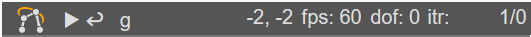

mec2 comes with a custom HTML element which allows to implement models directly into the page without the necessity of running extra boilerplate code.
The aim of this HTML element is to minimize the implementation overhead of the user, while maintaining all features mec2 has.
<mec-2 width="351" height="221" x0="60" y0="60" cartesian darkmode nodelabels nodeinfo="pos" constraintinfo>
{ "nodes":[
{"id":"A0","base":true,"idloc":"sw"},
{"id":"B0","x":100,"base":true,"idloc":"se"},
{"id":"A","y":50,"idloc":"nw"},
{"id":"B","x":120,"y":100,"idloc":"ne"}
],
"constraints":[{
"id":"a","p1":"A0","p2":"A","len":{"type":"const"},
"ori":{"type":"drive","func":"linear","Dt":5},
"lw":16, "ls":"#ff770066"
}, {
"id":"b","p1":"A","p2":"B","len":{"type":"const"},
"lw":16, "ls":"#ff770066"
}, {
"id":"c","p1":"B0","p2":"B","len":{"type":"const"},
"lw":16, "ls":"#ff770066"
}
]
}
</mec-2>
<script src="https://cdn.jsdelivr.net/gh/goessner/mec2@master/mec2.html.js"></script>
The overall styling is handled by respective properties of the mec-2 element:
width: Width of the element inpx.height: Height of the element inpx.x0: x-origin of the model.y0: y-origin of the model.cartesian:: Whethercartesianis true or not (see View).grid: Showgridin background.darkmode: Whether dark mode is set or not.gravity: Activate gravity.pausing: Pause the model.hidenodes: Hide nodes.constraintlabels: Show labels of constraints.loadlabels: Show labels of loads.nodelabels: Show labels of nodes.
The syntax of the innerHTML is as straight forward as mec2 is:
The model embedded into the innerHTML of the element is the same as they are
defined in the default way, but as JSON.
Note: Don't forget to use quotations (e.g.
"x") for the properties, since theg2-elementinterprets theinnerHTMLusing the JSON format.
You can issue asJSON on any model designed in the "normal" way to get the JSON
description of said model.
The navigation bar #

The interface of the mec2-element aims to be simple and intuitive.
The top bar includes:
- play/pause button, which is used to start/pause a provided drive on a constraint. More info can be found here.
- the reset button brings the mechanism in its default position, so there is no need to reload the page everytime the mechanism is to be reset.
- the toggle gravity button is used to toggle the
"gravity"flag of the model. This is useful to review different behaviour whether gravity is existent, or not. - coordinates of the mouse for x and y in respect to the origin of the model.
- The frames per second (fps) are a useful indicator whether perfomance issues are existent. Because the animation uses
requestAnimationFrame, this value should be around 60 at all times. - The degree of freedom (dof) of the mechanism is calculated by the summed degrees of freedom of the nodes, which are constrained by the
constraints. - The last indicator shows the required iterations to reach the termination condition (in respect to position/velocity).